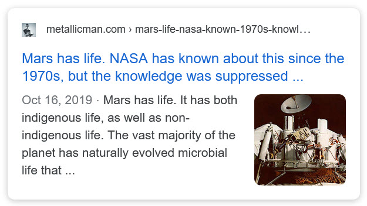
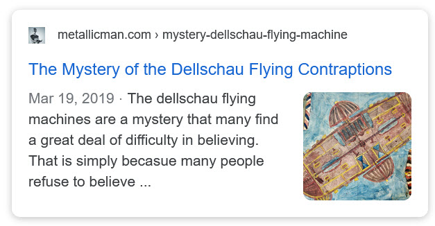
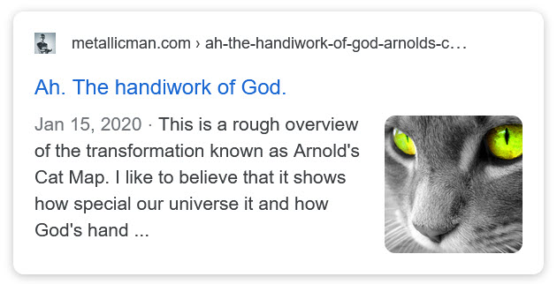
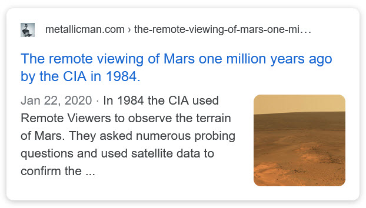
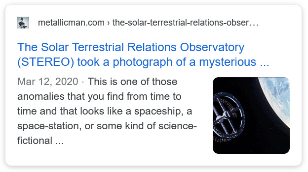

(OOPART) An out-of-place artifact is an artifact of historical, archaeological, or paleontological interest found in an unusual context, that challenges conventional historical chronology by being "too advanced" for the level of civilization that existed at the time, or showing "human presence" before humans were known to exist. Other examples suggest contact between different cultures that are hard to account for with conventional historical understanding. -Wikipedia This is an index of items that are classified as OOPARTS. These are items and situations that do not fit the conventional narrative. Instead of trying to justify a conventional narrative, we utilize MAJestic understandings to provide answers to the mysteries presented.
What mysteries and OOPARTS are…
Mysteries and OOPARTS are things that defy the commonly accepted view of the world. It’s really that simple.
- If you believe that the Earth is flat, then you would have a very difficult time grappling with pictures of the Earth as a globe.
- If you believe that all men are “pigs” and “enslave” women, and that traditionally run households are horrible for women, then you will have a difficult time with the way Attila the Hun treated women.
- If you believe that the American Civil War was over slavery, then you would have a difficult time understanding the behavior of the Confederados.
- If you believe that humans are the only intelligent life in the universe, then you will have a difficult time understanding a million year old computer.
Here are some mysteries and OOPARTS explained. In all cases the discussions are based on what I was exposed to. Most of which is considered to be fringe and “tin hat” stuff. Whatever. Enjoy.
Some Books
The Articles
- The non-physical components of megalithic locations and their implications
- Anomalous Metallic Object Discovered Inside a 4.5 Billion-Year-Old Meteorite
- The mystery of the sunken Newfoundland armada.
- The archaeological dilemma of the 250,000 year old Hueyatlaco site remains
- The mystery find of a polished metal part within a geode that’s millions of years old
- The mystery of the 300 million year old wheel embedded inside sandstone found in a deep mine
- The mystery of that silly pet dinosaur that ate up a yummy delicious human
- A metallurgical study of the aluminum locking pawl of Aiud a fine OOPART for investigative curiosity
- The Mystery of the forgotten Madog Expedition that followed the lost Madog expedition.
- The curiosity of the forgotten, ancient, and deeply underground, mystery structure
- The Mysterious Book That Can Not Be Explained
- The Fuselage embedded within the rocks of Victoria Falls
- The Hammer inside the Rock – The “London Hammer”
- [AI summarizes The Hammer in the Rock + Infographic]
- The Crespi Ancient Artifact Collection of Cuenca Ecuador








Articles & Links
You’ll not find any big banners or popups here talking about cookies and privacy notices. There are no ads on this site (aside from the hosting ads – a necessary evil). Functionally and fundamentally, I just don’t make money off of this blog. It is NOT monetized. Finally, I don’t track you because I just don’t care to.
To go to the MAIN Index;
- You can start reading the articles by going HERE.
- You can visit the Index Page HERE to explore by article subject.
- You can also ask the author some questions. You can go HERE .
- You can find out more about the author HERE.
- If you have concerns or complaints, you can go HERE.
- If you want to make a donation, you can go HERE.
Please kindly help me out in this effort. There is a lot of effort that goes into this disclosure. I could use all the financial support that anyone could provide. Thank you very much.
[wp_paypal_payment]